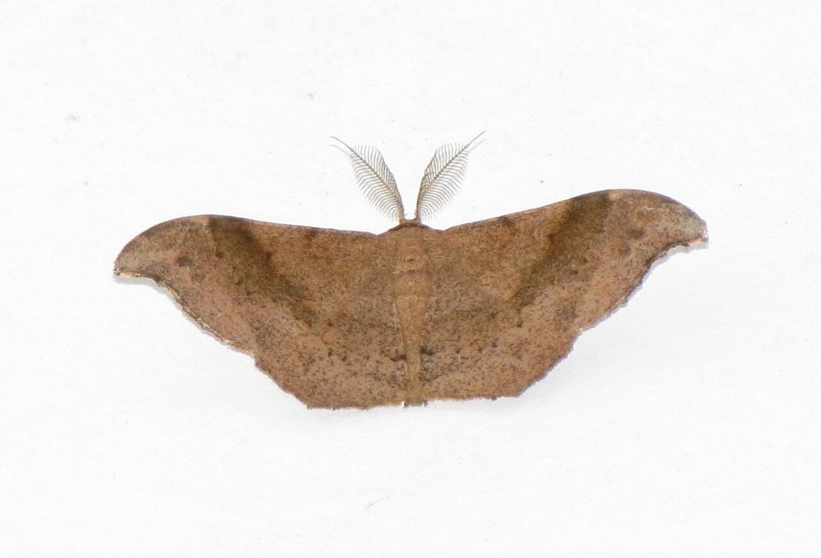

काला लूपर पतंगाBlack Looper
Hyposidra talaca · Geometridae · INS-0314

- Scientific name वैज्ञानिक नाम
- Hyposidra talaca (Walker, 1860)
- Family कुल
- Geometridae
- Hindi हिंदी
- काला लूपर पतंगा
- Local names स्थानीय नाम
- black looper, kala looper patanga
- Status here यहाँ की स्थिति
- native
- Movement आवागमन
- Resident, here all year
- Known from कहाँ दर्ज
- Others have published records from the wider Awadh–Purvanchal plain, none yet from Basti–Ayodhya अवध–पूर्वांचल से दूसरों के प्रकाशित अभिलेख, बस्ती–अयोध्या से अभी नहीं
- IUCN IUCN
- not evaluated
- Review समीक्षा
- not yet reviewed
When to look कब देखें
Present all year. साल भर मौजूद।
काला लूपर पतंगा / Black Looper
Hyposidra talaca (Walker, 1860) — Geometridae
काला लूपर पतंगा — यह गहरे जैतूनी-धूसर रंग का एक पतंगा है जिसके पंखों पर हल्का धूसर छिड़काव होता है। इसके दोनों पंखों पर हल्की लहरदार रेखाएँ और गहरी किनारी होती है, जबकि नर के अगले पंख के सिरे के पास एक धब्बा पाया जाता है। इसकी इल्ली गुलाबीपन लिए जैतूनी-हरे रंग की होती है जिस पर काले छींटे होते हैं।
Quick Identification त्वरित पहचान
| Feature | Description |
|---|---|
| Wingspan | Male 44 mm, female 54–60 mm (Hampson 1895, p. 213) |
| Ground colour | Dark olive fuscous, more or less irrorated and suffused with grey; cilia dark (Hampson 1895, p. 213) |
| Markings | Both wings with faint traces of medial and crenulate postmedial lines; forewing with traces of antemedial line and more or less distinct subapical patch in male (Hampson 1895, p. 213) |
| Underside | Crenulate postmedial line to both wings (Hampson 1895, p. 213) |
| Form rigusaria | Paler and redder (Hampson 1895, p. 213) |
Field tip: Look for a dark olive-fuscous geometrid moth dusted with grey, with faint crenulate postmedial lines on both wings and dark cilia (Hampson 1895, p. 213).
हिंदी: इसके नर के पंखों का फैलाव 44 मिमी और मादा का 54 से 60 मिमी होता है। गहरे जैतूनी-धूसर पंखों पर हल्का धूसर छिड़काव और कंगूरेदार रेखाएँ इसकी पहचान हैं।
Morphology आकारिकी
Biometrics:
| Measurement | Range | Source |
|---|---|---|
| Expanse (male) | 44 mm | Hampson (1895, p. 213) |
| Expanse (female) | 54–60 mm | Hampson (1895, p. 213) |
Hampson (1895, p. 213) describes the moth: "Dark olive fuscous, more or less irrorated and suffused with grey : both wings with faint traces of medial and crenulate postmedial lines ; the cilia dark. Fore wing with traces of antemedial line and more or less distinct subapical patch in male. Underside with crenulate postmedial line to both wings. The form rigusaria is paler and redder."
Larval Stage
Hampson (1895, p. 213) describes the larva: "Larva pinkish olive-green, irrorated with black, and with dark patches on 4th and 6th somites."
हिंदी: हैंपसन (1895) के अनुसार इसकी इल्ली गुलाबीपन लिए जैतूनी-हरे रंग की होती है जिस पर काले छींटे तथा चौथे और छठे खंड पर गहरे धब्बे होते हैं। इसका एक हल्का और लालिमा लिए रूप rigusaria भी मिलता है।
Behaviour & Ecology व्यवहार और पारिस्थितिकी
Not available in consulted sources.
हिंदी: इसके व्यवहार और पारिस्थितिकी का विस्तृत विवरण देखे गए स्रोतों में उपलब्ध नहीं है।
Life Cycle / Phenology जीवन चक्र
Not available in consulted sources.
हिंदी: इसके जीवन चक्र और मौसमी गतिविधि का विवरण देखे गए स्रोतों में उपलब्ध नहीं है।
Host Plants or Prey आहार
Hampson (1895, p. 213) gives the food-plants as Combretum and "Ficus parasiticus".
हिंदी: हैंपसन (1895) के अनुसार इसकी इल्ली Combretum और Ficus parasiticus पर पलती है।
Predators / Natural Enemies शत्रु
Not available in consulted sources.
हिंदी: इसके प्राकृतिक शत्रुओं का विवरण देखे गए स्रोतों में उपलब्ध नहीं है।
Agricultural / Human Relevance कृषि प्रासंगिकता
Not available in consulted sources.
हिंदी: इसके कृषि या मानव महत्व का विवरण देखे गए स्रोतों में उपलब्ध नहीं है।
Expected Locally स्थानीय रूप से अपेक्षित
Not a field record. Written from published accounts for eastern Uttar Pradesh. No confirmed local sighting yet — if you have seen it, that is what the atlas needs.
अभी तक स्थानीय पुष्टि नहीं। यह विवरण प्रकाशित स्रोतों से है, किसी अवलोकन से नहीं।
Hampson (1895, p. 213) gives its range as throughout India. GBIF holds published records from the wider Awadh–Purvanchal plain, none yet from Basti–Ayodhya: two photographed records by two observers, one from Lakhimpur Kheri on 18 July 2025 and one from Lucknow on 2 July 2026. A first local record would be a clear photograph showing the dark olive-fuscous wings, grey irroration, and crenulate postmedial lines with place and date, sent through the About page.
हिंदी: हैंपसन (1895) ने इसे पूरे भारत में दर्ज किया है। जीबीआइएफ (GBIF) में लखीमपुर खीरी और लखनऊ से दो अभिलेख हैं, पर बस्ती या अयोध्या से अभी कोई अभिलेख नहीं है।
Distribution वितरण
Global range: Hampson (1895, p. 213) gives: "Throughout India, Ceylon, and Burma ; Andamans ; Java ; Borneo ; Celebes ; Philippines."
In India: Throughout India and the Andamans (Hampson 1895, p. 213).
In Uttar Pradesh: GBIF holds two photographed records by two observers: Lakhimpur Kheri (18 July 2025) and Lucknow (2 July 2026).
In Basti district / eastern UP: GBIF holds no record from Basti or Ayodhya.
हिंदी: हैंपसन (1895) के अनुसार यह पूरे भारत, श्रीलंका, बर्मा, अंडमान, जावा, बोर्नियो, सेलेबेस और फिलीपींस में पाया जाता है। उत्तर प्रदेश में जीबीआइएफ पर लखीमपुर खीरी और लखनऊ के दो अभिलेख हैं, पर बस्ती और अयोध्या से कोई अभिलेख नहीं है।
Research Questions शोध प्रश्न
Anyone can investigate these | कोई भी इन प्रश्नों की जाँच कर सकता है
- Does Hyposidra talaca occur in Basti and Ayodhya districts, given records in Lakhimpur Kheri and Lucknow? / क्या बस्ती और अयोध्या जिलों में काला लूपर पतंगा मिलता है?
- In which months are adults active in eastern Uttar Pradesh (given July records in Kheri and Lucknow)? / पूर्वी उत्तर प्रदेश में यह पतंगा किन महीनों में सक्रिय रहता है?
- Which local Combretum or Ficus species serve as larval food-plants in eastern Uttar Pradesh?
- How frequently does the paler, redder form rigusaria appear in Uttar Pradesh?
- Can a child spot the dark olive-grey wings and wavy edge lines on a moth resting flat against a wall or leaf without touching it? (No equipment needed.)
हिंदी: कोई भी व्यक्ति बिना किसी उपकरण के दीवार या पत्ती पर पंख फैलाए बैठे इस गहरे पतंगे की लहरदार रेखाओं को देख सकता है।
Similar Species मिलती-जुलती प्रजातियाँ
| Species | How to tell apart | हिंदी |
|---|---|---|
| Hyposidra talaca (form rigusaria) | Paler and redder than typical dark olive-fuscous H. talaca (Hampson 1895, p. 213). No look-alike in the atlas is compared in Hampson (1895, p. 213) | सामान्य गहरे जैतूनी-धूसर रूप की तुलना में हल्का और लालिमा लिए रूप (rigusaria) |
Field rule: A dark olive-fuscous geometrid moth dusted with grey, with faint crenulate postmedial lines on both wings and dark cilia (expanse 44 mm in male, 54–60 mm in female), is Hyposidra talaca (Hampson 1895, p. 213).
हिंदी: गहरे जैतूनी-धूसर पंखों पर हल्का धूसर छिड़काव और दोनों पंखों पर कंगूरेदार रेखाएँ काला लूपर पतंगा की पहचान हैं।
Taxonomy & Classification वर्गीकरण
Original description. Walker, F. (1860). List of the Specimens of Lepidopterous Insects in the Collection of the British Museum, part 20, p. 59, as Lagyra talaca (cited in Hampson 1895, p. 213).
Subspecies. Not available in consulted sources. Hampson (1895, p. 213) treats Lagyra rigusaria Walker as a paler, redder form (rigusaria).
Family and order placement. Order Lepidoptera, family Geometridae, genus Hyposidra (Hampson 1895, p. 213, entry 3263). Other atlas members of Geometridae include Cross-line Geometer Moth (Traminda mundissima) and Small Emerald Moth (Comostola laesaria).
Phylogenetic notes. Placed in Hyposidra and Geometridae by both Hampson (1895, p. 213) and GBIF.
IUCN status rationale. Not evaluated on the IUCN Red List.
हिंदी: इसका पहला वैज्ञानिक वर्णन वॉकर (1860) ने किया था। यह Geometridae कुल और Hyposidra वंश की प्रजाति है।
Photo Gallery फोटो गैलरी
No photos yet — add field photos to media/species/black_looper/ and run node scripts/sync_photos.js.
Photos needed आवश्यक फोटो
- [ ] Dorsal view showing the dark olive-fuscous wings and grey irroration (ऊपरी सतह, गहरे जैतूनी-धूसर पंख और धूसर छिड़काव दिखाता चित्र)
- [ ] Underside showing the crenulate postmedial line (निचली सतह की कंगूरेदार रेखा दिखाता चित्र)
References संदर्भ
- Walker, F. (1860). List of the Specimens of Lepidopterous Insects in the Collection of the British Museum. Part 20, p. 59 (cited in Hampson 1895, p. 213).
- Hampson, G. F. (1895). The Fauna of British India, including Ceylon and Burma. Moths. Vol. 3 (p. 213). Taylor and Francis, London.
- GBIF Occurrence Data — Hyposidra talaca (Walker, 1860), India (2025).
Source file: species/fauna/insects/black_looper.md